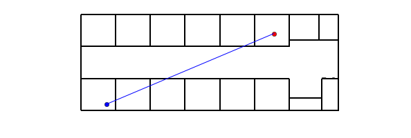
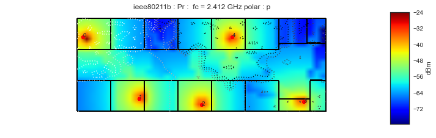

<!DOCTYPE html PUBLIC "-//W3C//DTD XHTML 1.0 Transitional//EN"
  "http://www.w3.org/TR/xhtml1/DTD/xhtml1-transitional.dtd">


<html xmlns="http://www.w3.org/1999/xhtml">
  <head>
    <meta http-equiv="Content-Type" content="text/html; charset=utf-8" />
    
    <title>Multi-wall model &mdash; Python 1 documentation</title>
    
    <link rel="stylesheet" href="../../_static/nature.css" type="text/css" />
    <link rel="stylesheet" href="../../_static/pygments.css" type="text/css" />
    
    <script type="text/javascript">
      var DOCUMENTATION_OPTIONS = {
        URL_ROOT:    '../../',
        VERSION:     '1',
        COLLAPSE_INDEX: false,
        FILE_SUFFIX: '.html',
        HAS_SOURCE:  true
      };
    </script>
    <script type="text/javascript" src="../../_static/jquery.js"></script>
    <script type="text/javascript" src="../../_static/underscore.js"></script>
    <script type="text/javascript" src="../../_static/doctools.js"></script>
    <script type="text/javascript" src="../../_static/sidebar.js"></script>
    <link rel="author" title="About these documents" href="../../about.html" />
    <link rel="top" title="Python 1 documentation" href="../../index.html" />
<script type="text/javascript">

  var _gaq = _gaq || [];
  _gaq.push(['_setAccount', 'UA-34943220-1']);
  _gaq.push(['_trackPageview']);

  (function() {
    var ga = document.createElement('script'); ga.type = 'text/javascript'; ga.async = true;
    ga.src = ('https:' == document.location.protocol ? 'https://ssl' : 'http://www') + '.google-analytics.com/ga.js';
    var s = document.getElementsByTagName('script')[0]; s.parentNode.insertBefore(ga, s);
  })();

</script>

  </head>
  <body role="document">

    <div class="header-wrapper">
      <div class="header">
          <p class="logo"><a href="../../index.html">
            
          </a>
          </p><div class="navbar">
          <ul>
            <li><a href="../../download.html">Download</a></li>
            <li><a href="../TOC.html">User Guide</a></li>
            <li><a href="../../modules/pylayers.html">Reference</a></li>
       </ul>

<div class="search_form">

<div id="cse" style="width: 100%;"></div>
<script src="http://www.google.com/jsapi" type="text/javascript"></script>
<script type="text/javascript">
  google.load('search', '1', {language : 'en'});
  google.setOnLoadCallback(function() {
    var customSearchControl = new google.search.CustomSearchControl('016639176250731907682:tjtqbvtvij0');
    customSearchControl.setResultSetSize(google.search.Search.FILTERED_CSE_RESULTSET);
    var options = new google.search.DrawOptions();
    options.setAutoComplete(true);
    customSearchControl.draw('cse', options);
  }, true);
</script>

</div>
</div> <!-- end navbar --></div>
    </div>

    <div class="content-wrapper">

      <div class="sphinxsidebar">
	<div class="sphinxsidebarwrapper">
	   <div class="rel rellarge">
	     
	<!-- rellinks[1:] is an ugly hack to avoid link to module
	    index  -->
	<div class="rellink">
	<a href="../../py-modindex.html" title="Python Module Index"
	    >Modules
	    <br>
	    <span class="smallrellink">
	    Python Module...
	    </span>
	    <span class="hiddenrellink">
	    Python Module Index
	    </span>
	    
	    </a>
	</div>
	<!-- Ad a link to the 'up' page -->
    </div>
    <p style="text-align: center; background-color: #BFFFFF">This documentation is

    for Python <strong>version 1</strong>
    &mdash; <a href="https://github.com/pylayers/pylayers/archive/master.zip">Other versions</a></p>
    
    <h3>Citing</h3>
    <p>If you use the software, please consider
    <a href="../../about.html#citing-pylayers">citing pylayers</a>.</p>
    <h3>This page</h3>
	<ul>
<li><a class="reference internal" href="#">Multi-wall model</a><ul>
<li><a class="reference internal" href="#defining-a-radio-link">Defining a radio link</a></li>
<li><a class="reference internal" href="#ploting-the-scene">Ploting the scene</a><ul>
<li><a class="reference internal" href="#finding-the-intersection-between-the-direct-path-and-the-walls">Finding the intersection between the &#8220;direct&#8221; path and the walls</a></li>
<li><a class="reference internal" href="#computing-the-multi-wall-model">Computing the Multi-wall model</a></li>
</ul>
</li>
</ul>
</li>
<li><a class="reference internal" href="#coverage-class">Coverage class</a></li>
</ul>

    
    </div>
	  </div>


      <div class="content">
            
      <div class="documentwrapper">
        <div class="bodywrapper">
          <div class="body" role="main">
            
  <div class="section" id="multi-wall-model">
<h1>Multi-wall model<a class="headerlink" href="#multi-wall-model" title="Permalink to this headline">¶</a></h1>
<div class="code python highlight-python"><div class="highlight"><pre><span></span>import time
from pylayers.util.project import *
import pylayers.util.pyutil as pyu
from pylayers.util.utilnet import str2bool
from pylayers.gis.layout import Layout
from pylayers.antprop.loss import *
from pylayers.antprop.coverage import *
from pylayers.network.model import *
%matplotlib inline
</pre></div>
</div>
<div class="highlight-python"><div class="highlight"><pre><span></span>Layout:Mayavi is not installed
mayavi not installed
Layout:Mayavi is not installed
Layout:Mayavi is not installed
mayavi not installed
</pre></div>
</div>
<p>The layout is loaded from an ini file. If the graphs are not available,
they are built.</p>
<div class="code python highlight-python"><div class="highlight"><pre><span></span><span class="n">L</span><span class="o">=</span><span class="n">Layout</span><span class="p">(</span><span class="s1">&#39;TA-Office.ini&#39;</span><span class="p">)</span>
</pre></div>
</div>
<div class="section" id="defining-a-radio-link">
<h2>Defining a radio link<a class="headerlink" href="#defining-a-radio-link" title="Permalink to this headline">¶</a></h2>
<p>The 2 extremities of the radio link (transmitter and receiver) have
coordinates described as 1x2 <code class="docutils literal"><span class="pre">numpy.array</span></code> .</p>
<ul class="simple">
<li>A a radio node</li>
<li>B a radio node</li>
</ul>
<div class="code python highlight-python"><div class="highlight"><pre><span></span><span class="n">A</span><span class="o">=</span><span class="n">np</span><span class="o">.</span><span class="n">array</span><span class="p">((</span><span class="mi">4</span><span class="p">,</span><span class="mi">1</span><span class="p">))</span> <span class="c1"># defining transmitter position</span>
<span class="n">B</span><span class="o">=</span><span class="n">np</span><span class="o">.</span><span class="n">array</span><span class="p">((</span><span class="mi">30</span><span class="p">,</span><span class="mi">12</span><span class="p">))</span> <span class="c1"># defining receiver position</span>
</pre></div>
</div>
</div>
<div class="section" id="ploting-the-scene">
<h2>Ploting the scene<a class="headerlink" href="#ploting-the-scene" title="Permalink to this headline">¶</a></h2>
<p>The scene is plotted with the <code class="docutils literal"><span class="pre">showG</span></code> method of the Layout</p>
<div class="code python highlight-python"><div class="highlight"><pre><span></span><span class="c1"># figure instanciation</span>
<span class="n">f</span> <span class="o">=</span> <span class="n">plt</span><span class="o">.</span><span class="n">figure</span><span class="p">(</span><span class="n">figsize</span><span class="o">=</span><span class="p">(</span><span class="mi">10</span><span class="p">,</span><span class="mi">5</span><span class="p">))</span>
<span class="n">ax</span> <span class="o">=</span> <span class="n">f</span><span class="o">.</span><span class="n">add_subplot</span><span class="p">(</span><span class="mi">111</span><span class="p">)</span>
<span class="n">r</span> <span class="o">=</span> <span class="n">np</span><span class="o">.</span><span class="n">array</span><span class="p">((</span><span class="n">A</span><span class="p">,</span><span class="n">B</span><span class="p">))</span>
<span class="c1"># plotting the Layout</span>
<span class="n">f</span><span class="p">,</span><span class="n">ax</span> <span class="o">=</span> <span class="n">L</span><span class="o">.</span><span class="n">showG</span><span class="p">(</span><span class="n">fig</span><span class="o">=</span><span class="n">f</span><span class="p">,</span><span class="n">ax</span><span class="o">=</span><span class="n">ax</span><span class="p">,</span><span class="n">graph</span><span class="o">=</span><span class="s1">&#39;s&#39;</span><span class="p">,</span><span class="n">nodes</span><span class="o">=</span><span class="bp">False</span><span class="p">)</span>
<span class="c1"># plotting the Tx and Rx</span>
<span class="n">ax</span><span class="o">.</span><span class="n">plot</span><span class="p">(</span><span class="n">A</span><span class="p">[</span><span class="mi">0</span><span class="p">],</span><span class="n">A</span><span class="p">[</span><span class="mi">1</span><span class="p">],</span><span class="s1">&#39;ob&#39;</span><span class="p">)</span>
<span class="n">ax</span><span class="o">.</span><span class="n">plot</span><span class="p">(</span><span class="n">B</span><span class="p">[</span><span class="mi">0</span><span class="p">],</span><span class="n">B</span><span class="p">[</span><span class="mi">1</span><span class="p">],</span><span class="s1">&#39;or&#39;</span><span class="p">)</span>
<span class="c1"># plotting the LOS</span>
<span class="n">ax</span><span class="o">.</span><span class="n">plot</span><span class="p">(</span><span class="n">r</span><span class="p">[:,</span><span class="mi">0</span><span class="p">],</span><span class="n">r</span><span class="p">[:,</span><span class="mi">1</span><span class="p">])</span>
<span class="n">a</span> <span class="o">=</span> <span class="n">plt</span><span class="o">.</span><span class="n">axis</span><span class="p">(</span><span class="s1">&#39;off&#39;</span><span class="p">)</span>
</pre></div>
</div>

<div class="section" id="finding-the-intersection-between-the-direct-path-and-the-walls">
<h3>Finding the intersection between the &#8220;direct&#8221; path and the walls<a class="headerlink" href="#finding-the-intersection-between-the-direct-path-and-the-walls" title="Permalink to this headline">¶</a></h3>
<p>The function <code class="docutils literal"><span class="pre">angleonlink</span></code> returns the list of intersected segments
and the corresponding incidence angles (in radians) with respect to the
segment normal.</p>
<div class="code python highlight-python"><div class="highlight"><pre><span></span>%pdef L.angleonlink
</pre></div>
</div>
<div class="highlight-python"><div class="highlight"><pre><span></span>L.angleonlink(p1=array([0, 0]), p2=array([10,  3]))
</pre></div>
</div>
<div class="code python highlight-python"><div class="highlight"><pre><span></span><span class="n">data</span><span class="o">=</span><span class="n">L</span><span class="o">.</span><span class="n">angleonlink</span><span class="p">(</span><span class="n">A</span><span class="p">,</span><span class="n">B</span><span class="p">)</span>
</pre></div>
</div>
</div>
<div class="section" id="computing-the-multi-wall-model">
<h3>Computing the Multi-wall model<a class="headerlink" href="#computing-the-multi-wall-model" title="Permalink to this headline">¶</a></h3>
<p>The multi-wall model computation returns losses and LOS excess delay for
orthogonal and parallel polarization</p>
<div class="code python highlight-python"><div class="highlight"><pre><span></span><span class="n">fGHz</span> <span class="o">=</span> <span class="mf">2.4</span>
<span class="c1"># observation grid</span>

<span class="n">r</span> <span class="o">=</span> <span class="n">np</span><span class="o">.</span><span class="n">array</span><span class="p">((</span><span class="n">B</span><span class="p">,</span><span class="n">B</span><span class="p">))</span>

<span class="n">Lwo</span><span class="p">,</span><span class="n">Lwp</span><span class="p">,</span><span class="n">Edo</span><span class="p">,</span><span class="n">Edp</span> <span class="o">=</span> <span class="n">Losst</span><span class="p">(</span><span class="n">L</span><span class="p">,</span><span class="n">fGHz</span><span class="p">,</span><span class="n">r</span><span class="o">.</span><span class="n">T</span><span class="p">,</span><span class="n">A</span><span class="p">)</span>

<span class="k">print</span> <span class="s1">&#39;Losses orthogonal polarization </span><span class="se">\t</span><span class="s1"> </span><span class="si">%g</span><span class="s1"> dB&#39;</span> <span class="o">%</span><span class="p">(</span><span class="n">Lwo</span><span class="p">[</span><span class="mi">0</span><span class="p">][</span><span class="mi">0</span><span class="p">])</span>
<span class="k">print</span> <span class="s1">&#39;Losses parallel polarization </span><span class="se">\t</span><span class="s1"> </span><span class="si">%g</span><span class="s1">  dB&#39;</span> <span class="o">%</span> <span class="p">(</span><span class="n">Lwp</span><span class="p">[</span><span class="mi">0</span><span class="p">][</span><span class="mi">0</span><span class="p">])</span>
<span class="k">print</span> <span class="s1">&#39;Excess delay orthogonal polarization  </span><span class="se">\t</span><span class="s1"> </span><span class="si">%g</span><span class="s1"> ns&#39;</span> <span class="o">%</span><span class="p">(</span><span class="n">Edo</span><span class="p">[</span><span class="mi">0</span><span class="p">][</span><span class="mi">0</span><span class="p">])</span>
<span class="k">print</span> <span class="s1">&#39;Excess delay parallel polarization   </span><span class="se">\t</span><span class="s1"> </span><span class="si">%g</span><span class="s1"> ns&#39;</span> <span class="o">%</span><span class="p">(</span><span class="n">Edp</span><span class="p">[</span><span class="mi">0</span><span class="p">][</span><span class="mi">0</span><span class="p">])</span>
</pre></div>
</div>
<div class="highlight-python"><div class="highlight"><pre><span></span>Losses orthogonal polarization       27.7333 dB
Losses parallel polarization         16.0573  dB
Excess delay orthogonal polarization         2.23113 ns
Excess delay parallel polarization           2.12364 ns
</pre></div>
</div>
</div>
</div>
</div>
<div class="section" id="coverage-class">
<h1>Coverage class<a class="headerlink" href="#coverage-class" title="Permalink to this headline">¶</a></h1>
<p>By extension, the multi-wall model can also be used to perform a full
coverage of a Layout given a transmitter position.</p>
<div class="code python highlight-python"><div class="highlight"><pre><span></span><span class="n">C</span> <span class="o">=</span> <span class="n">Coverage</span><span class="p">()</span>
<span class="n">C</span><span class="o">.</span><span class="n">L</span>  <span class="o">=</span> <span class="n">L</span> <span class="c1"># set layout</span>
<span class="n">C</span><span class="o">.</span><span class="n">tx</span> <span class="o">=</span> <span class="n">A</span> <span class="c1"># set the transmitter</span>
</pre></div>
</div>
<div class="code python highlight-python"><div class="highlight"><pre><span></span><span class="n">C</span><span class="o">.</span><span class="n">L</span>
</pre></div>
</div>
<div class="highlight-python"><div class="highlight"><pre><span></span>----------------
TA-Office.ini
Image(&#39;/home/uguen/Bureau/P1/struc/images/DLR4991.png&#39;)
----------------

Number of points  : 71
Number of segments  : 91
Number of sub segments  : 16
Number of cycles  : 22
Number of rooms  : 19
degree 0 : []
degree 1 : []
number of node point of degree 2 : 39
number of node point of degree 3 : 32

xrange :(0.0, 40.0)
yrange :(0.0, 15.0)

Useful dictionnaries
----------------
dca {cycle : []} cycle with an airwall
sl {slab name : slab dictionary}
name :  {slab :seglist}

Useful arrays
----------------
pt : numpy array of points
normal : numpy array of normal
offset : numpy array of offset
tsg : get segment index in Gs from tahe
isss :  sub-segment index above Nsmax
tgs : get segment index in tahe from self.Gs
upnt : get point id index from self.pt
iupnt : get point index in self.pt from point id
lsss : list of segments with sub-segment
sla : list of all slab names (Nsmax+Nss+1)
degree : degree of nodes
</pre></div>
</div>
<div class="code python highlight-python"><div class="highlight"><pre><span></span><span class="n">C</span><span class="o">.</span><span class="n">creategrid</span><span class="p">()</span>
</pre></div>
</div>
<p>The coverage is performed on a grid. Boundaries of the grid are
specified in the
<code class="docutils literal"><span class="pre">`coverage.ini</span></code> &lt;<a class="reference external" href="https://github.com/pylayers/pylayers/blob/master/data/ini/coverage.ini">https://github.com/pylayers/pylayers/blob/master/data/ini/coverage.ini</a>&gt;`__
file</p>
<div class="code python highlight-python"><div class="highlight"><pre><span></span><span class="n">t1</span><span class="o">=</span><span class="n">time</span><span class="o">.</span><span class="n">time</span><span class="p">()</span>
<span class="n">C</span><span class="o">.</span><span class="n">cover</span><span class="p">()</span>
<span class="n">t2</span><span class="o">=</span><span class="n">time</span><span class="o">.</span><span class="n">time</span><span class="p">()</span>
<span class="k">print</span> <span class="s1">&#39;Coverage performed in &#39;</span><span class="p">,</span> <span class="n">t2</span><span class="o">-</span><span class="n">t1</span><span class="p">,</span> <span class="s1">&#39;s&#39;</span>
</pre></div>
</div>
<div class="highlight-python"><div class="highlight"><pre><span></span>Coverage performed in  1.81702399254 s
</pre></div>
</div>
<p>For Orthogonal polarization</p>
<div class="code python highlight-python"><div class="highlight"><pre><span></span><span class="n">fig1</span><span class="o">=</span><span class="n">plt</span><span class="o">.</span><span class="n">figure</span><span class="p">(</span><span class="n">figsize</span><span class="o">=</span><span class="p">(</span><span class="mi">10</span><span class="p">,</span><span class="mi">10</span><span class="p">))</span>
<span class="n">f</span><span class="p">,</span><span class="n">a</span> <span class="o">=</span> <span class="n">C</span><span class="o">.</span><span class="n">show</span><span class="p">(</span><span class="n">typ</span><span class="o">=</span><span class="s1">&#39;pr&#39;</span><span class="p">,</span><span class="n">fig</span><span class="o">=</span><span class="n">fig1</span><span class="p">,</span><span class="n">nodes</span><span class="o">=</span><span class="bp">False</span><span class="p">)</span>
</pre></div>
</div>

<p>For parallel polarization</p>
<div class="code python highlight-python"><div class="highlight"><pre><span></span><span class="n">C</span><span class="o">.</span><span class="n">cover</span><span class="p">(</span><span class="n">snr</span><span class="o">=</span><span class="bp">False</span><span class="p">,</span><span class="n">sinr</span><span class="o">=</span><span class="bp">False</span><span class="p">)</span>
<span class="n">fig1</span><span class="o">=</span><span class="n">plt</span><span class="o">.</span><span class="n">figure</span><span class="p">(</span><span class="n">figsize</span><span class="o">=</span><span class="p">(</span><span class="mi">10</span><span class="p">,</span><span class="mi">10</span><span class="p">))</span>
<span class="n">f</span><span class="p">,</span><span class="n">a</span> <span class="o">=</span> <span class="n">C</span><span class="o">.</span><span class="n">show</span><span class="p">(</span><span class="n">typ</span><span class="o">=</span><span class="s1">&#39;pr&#39;</span><span class="p">,</span><span class="n">fig</span><span class="o">=</span><span class="n">fig1</span><span class="p">)</span>
</pre></div>
</div>

</div>


          </div>
        </div>
      </div>
        <div class="clearer"></div>
      </div>
    </div>
  

    <div class="footer">
        &copy; 2015, PyLayers developer team.
      Last updated on avril 06, 2016.
      Created using <a href="http://sphinx.pocoo.org/">Sphinx</a> 1.3.5. Design by <a href="http://desgrana.es">Desgrana</a>.
    <span style="padding-left: 5ex;">
    <a href="../../_sources/notebook/2-AP/MultiWall.txt"
	    rel="nofollow">Show this page source</a>
    </span>
    </div>
     <div class="rel rellarge">
    
    <div class="buttonPrevious">
      <a href="../../py-modindex.html">
        Previous
      </a>  
    </div>
    
     </div>
     <script type="text/javascript">
       $("div.buttonNext, div.buttonPrevious").hover(
           function () {
               $(this).css('background-color', '#AFFFFF');
           },
           function () {
               $(this).css('background-color', '#AFFFFF');
           }
       );
     </script>
  </body>
</html>